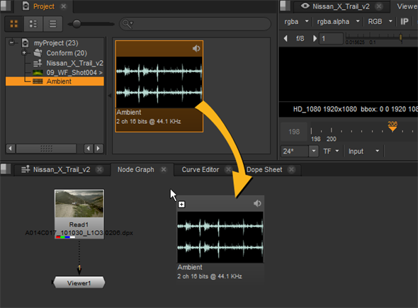
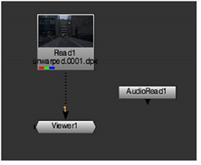

You can drag and drop audio clips from the Project tab to the Node Graph, if the clip is already in Nuke.

Otherwise, use the AudioRead node to read in an audio file:
| 1. | To create an AudioRead node, click Other > AudioRead in the Nuke Toolbar. |
The AudioRead node doesn’t have to be connected to other nodes.
|
 |
|
Simple AudioRead node setup. |
TIP: You can also load an audio file by creating a normal Read node and navigating to a supported audio file.
| 2. | In the AudioRead properties, use the file control to navigate to the audio file you want to read in. You can read in uncompressed .wav and .aiff files. |
| 3. | Use the time range fields to enter the start and end times in seconds for the audio in Nuke. |
| 4. | In the file time range fields, enter the start and end times in seconds of the audio file read in. These are automatically set to the values in the file, but you can change them to trim the data used in Nuke. |
| 5. | If you want to discard your changes and reload the audio file, click reload. |
| 6. | Use the ratesource menu to select the source for the sample rate: |
• file - reads the rate from the audio file.
• custom - lets you specify a custom sample rate in the rate field.
|
|